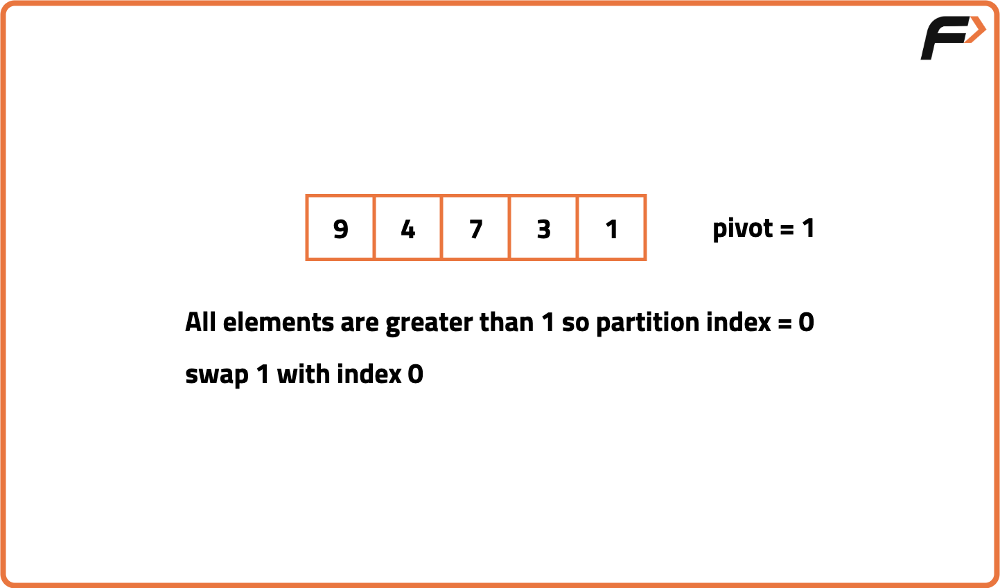
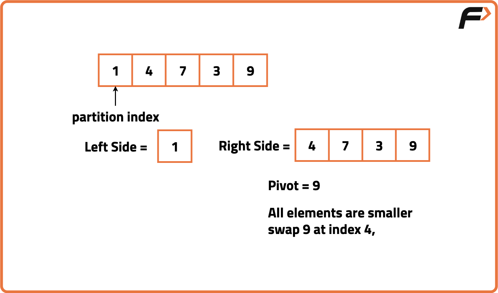
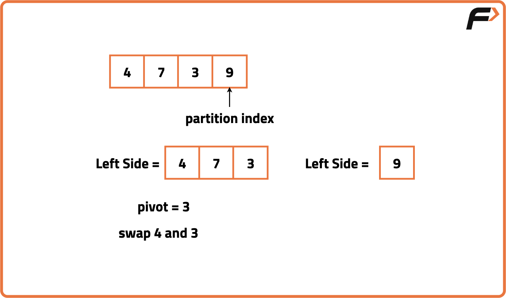
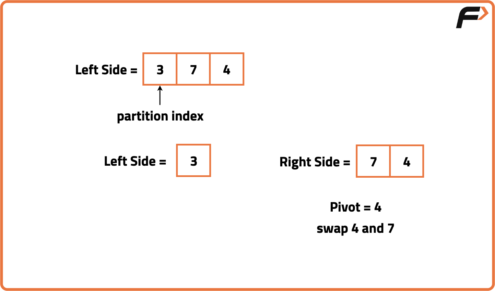
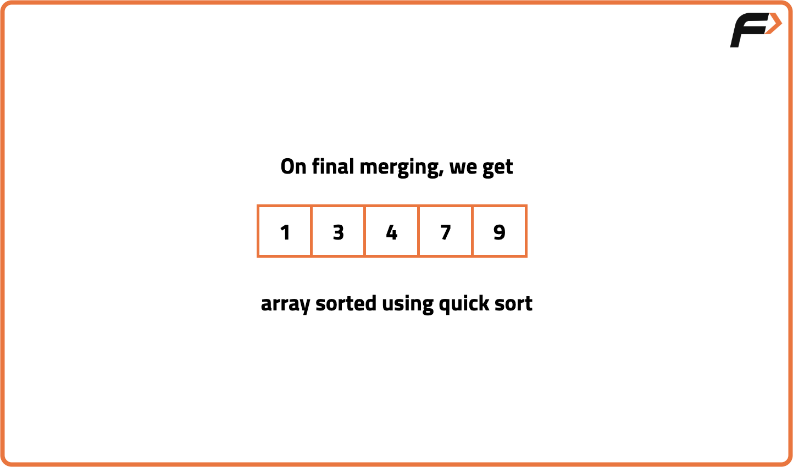

Quick Sort Algorithm
Problem Statement: Given an array of n integers, sort the array using the Quicksort method.
Examples
Input: N = 5, Arr[] = {4,1,7,9,3} Output: {1, 3, 4, 7, 9} Explanation: After sorting the array in ascending order it becomes 1, 3, 4, 7, 9 Input: N = 8, Arr[] = {4,6,2,5,7,9,1,3} Output: {1, 2, 3, 4, 5, 6, 7, 9} Explanation: After sorting the array in ascending order it becomes 1, 2, 3, 4, 5, 6, 7, 9
Disclaimer: Here is the practice link to help you assess your knowledge better. It's highly recommend trying to solve it before looking at the solution.
Quick Sort
Algorithm
The core idea behind Quicksort lies in partitioning the array around a pivot element such that all elements smaller than the pivot lie to its left and all greater elements lie to its right. This positioning ensures that the pivot is in its correct sorted place. By doing this for each recursive call, the problem is broken down into smaller subproblems where each side of the pivot can be independently sorted. This divide-and-conquer strategy allows Quicksort to sort parts of the array separately.
- Select a pivot element from the array (commonly the last element, but can be first, middle, or random).
- Rearrange the elements in the array such that all elements smaller than the pivot are placed before it and all greater elements are placed after it (this step is called partitioning).
- After partitioning, the pivot is in its correct sorted position.
- Recursively apply the same process to the subarrays on the left and right of the pivot.
- Base condition for recursion is when the subarray has zero or one element, as it's already sorted.
- Combine the results of the recursive calls to obtain the fully sorted array.





Code
#include <bits/stdc++.h>
using namespace std;
class Solution {
public:
// Function to perform quicksort
void quickSort(vector<int>& arr, int low, int high) {
// Base case: if low is not less than high
if (low < high) {
// Find pivot index after partitioning
int pivotIndex = partition(arr, low, high);
// Recursively sort elements before pivot
quickSort(arr, low, pivotIndex - 1);
// Recursively sort elements after pivot
quickSort(arr, pivotIndex + 1, high);
}
}
// Function to partition the array
int partition(vector<int>& arr, int low, int high) {
// Choose the last element as pivot
int pivot = arr[high];
// Initialize i to place smaller elements
int i = low - 1;
// Traverse the array
for (int j = low; j < high; j++) {
// If element is smaller than or equal to pivot
if (arr[j] <= pivot) {
// Increment i and swap with j
i++;
swap(arr[i], arr[j]);
}
}
// Place pivot in correct position
swap(arr[i + 1], arr[high]);
// Return pivot index
return i + 1;
}
};
int main() {
// Sample array
vector<int> arr = {10, 7, 8, 9, 1, 5};
// Create solution object
Solution sol;
// Apply quicksort
sol.quickSort(arr, 0, arr.size() - 1);
// Print sorted array
for (int num : arr)
cout << num << " ";
return 0;
}
Complexity Analysis
Time Complexity: O(N*logN), At each step, we divide the whole array, for that we take logN time and n steps are taken for the partitioning. In worst case i.e. when our pivot is always the greatest or the smallest element of the array, the time complexity can be O(N^2).Space Complexity: O(N), auxiliary stack space.